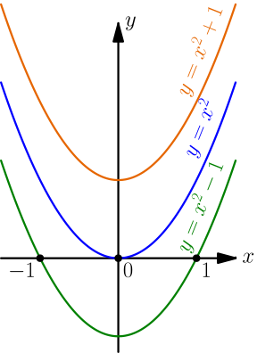

Taylor Series¶
So far we have calculated sine and cosine values with Python.
>>> import math
>>> math.sin(1)
0.8414709848078965
In this chapter we'll learn how these functions work, and we'll also write our own sin and cos implementations that would be good enough for pretty much everything.
This tutorial uses radians, unit circle trig and derivatives. Be sure to learn these things first.
Polynomials and stuff¶
This section introduces a few fancy words that I'll use in the rest of this chapter. Don't worry, rest of this will be less boring.
Things like $4x^3-5x^2+2x+5$ are known as polynomials. They contain nothing but constants and powers of $x$ (e.g. $x$, $x^2$, $x^3$) multiplied by more constants and added together. For example, $-5x^2$ is $x^2$ multiplied by the constant $-5$. Note that $x^0=1$ and $x^1=x$.
Here are some words related to polynomials:
- The degree of a polynomial means the highest power that $x$ is raised to. For example, the degree of $4x^3-5x^2+2x+5$ is 3 because the polynomial contains $x^3$.
- Zeros of a polynomial are $x$ values that make it equal to 0. For example, $1^2-1=0$ and $(-1)^2-1=0$, so $x=1$ and $x=-1$ are zeros of $x^2-1$.
A polynomial of degree $n$ has at most $n$ zeros. For example, we know that $1$ and $-1$ are two zeros of $x^2-1$, but the degree of $x^2-1$ is 2 so it cannot have any other zeros. Polynomials can also have less than $n$ zeros; for example, $x^2$ has just 1 zero at $x=0$ and $x^2+1$ has no zeros at all because $x^2$ is never less than 0.
The zeros of $f(x)$ can be thought of as places where the graph $y=f(x)$ touches the $x$ axis; that is, $y=0$:

The word series is a fancy way to say infinitely many things added to each other. For example, $1+1+1+...$ means that we add infinitely many $1$'s, so it's a series.
WTF is a Taylor series?¶
Things like the sine function cannot be polynomials because a polynomial of degree $n$ has at most $n$ zeros, but $\sin(x)$ has infinitely many zeros:

But what if we have an infinite series instead of a polynomial? Then we can have an infinite number of zeros. So, if $c_0,c_1,c_2,c_3,...$ are constants, we're talking about finding their values so that we have this:
$$\begin{align}\sin(x)=c_0+c_1x+c_2x^2+c_3x^3+c_4x^4+...\end{align}$$Let's try to find those constants. We'll do this for a general $f(x)$ first, so we get something that works with many other functions instead of just $f(x)=\sin(x)$. I'll also use colors to make things easier to follow.
$$\begin{align}f(x)=\blue{c_0}+\green{c_1x}+\maroon{c_2x^2}+\olive{c_3x^3}+\purple{c_4x^4}+...\end{align}$$We can start by plugging in $x=0$:
$$\begin{align}f(0) &= \blue{c_0}+\green{c_1\black{0}}+\maroon{c_2\black{0}^2}+\olive{c_3\black{0}^3}+\purple{c_4\black{0}^4}+... \\ &= \blue{c_0}+0+0+0+... \\ &= \blue{c_0}\end{align}$$Great, we found one constant, but we still have infinitely many constants to find. So, what do we do next? Let's try taking the derivative of both sides with the $\frac{d}{dx}x^c=cx^{c-1}$ and $\frac{d}{dx}(c\ f(x))=c\cdot\frac{d}{dx}f(x)$ rules.
$$\begin{align}f(x) &= \blue{c_0}+\green{c_1x}+\maroon{c_2x^2}+\olive{c_3x^3}+\purple{c_4x^4}+... \\ f'(x) &= \blue{0}+\green{c_1}+\maroon{2c_2x}+\olive{3c_3x^2}+\purple{4c_4x^3}+... \\ f'(0) &= \green{c_1}\end{align}$$Let's take the derivative again a few times until we can notice a pattern. Here $f''$ means the derivative of the derivative. It'll look like a mess, but it's not very complicated.
$$\begin{align}f'(x) &= \green{c_1}+\maroon{2c_2x}+\olive{3c_3x^2}+\purple{4c_4x^3}+\blue{5c_5x^4}+... \\ f''(x) &= \green{0}+\maroon{2c_2}+\olive{(3\cdot2)c_3x}+\purple{(4\cdot3)c_4x^2}+\blue{(5\cdot4)c_5x^3}+... \\ f''(0) &= \maroon{2c_2} \\ \maroon{c_2} &= \frac{f''(0)}{\maroon 2}\end{align}$$$$\begin{align}f''(x) &= \maroon{2c_2}+\olive{(3\cdot2)c_3x}+\purple{(4\cdot3)c_4x^2}+\blue{(5\cdot4)c_5x^3}+\green{(6\cdot5)c_6x^4}+... \\ f'''(x) &= \maroon{0}+\olive{(3\cdot2)c_3}+\purple{(4\cdot3\cdot2)c_4x}+\blue{(5\cdot4\cdot3)c_5x^2}+\green{(6\cdot5\cdot4)c_6x^3}+... \\ f'''(0) &= \olive{(3\cdot2)c_3} \\ \olive{c_3} &= \frac{f'''(0)}{\olive{3\cdot2}}\end{align}$$$$\begin{align}f'''(x) &= \olive{(3\cdot2)c_3}+\purple{(4\cdot3\cdot2)c_4x}+\blue{(5\cdot4\cdot3)c_5x^2}+\green{(6\cdot5\cdot4)c_6x^3}+... \\ f''''(x) &= \olive{0}+\purple{(4\cdot3\cdot2)c_4}+\blue{(5\cdot4\cdot3\cdot2)c_5x}+\green{(6\cdot5\cdot4\cdot3)c_6x^2}+... \\ f''''(0) &= \purple{(4\cdot3\cdot2)c_4} \\ \purple{c_4} &= \frac{f''''(0)}{\purple{4\cdot3\cdot2}}\end{align}$$At this point we need more notation:
- $f^{(n)}(x)$ is the $n$'th derivative of $f$, e.g. $f^{(4)}(x)=f''''(x)$. You probably agree that $f^{(10)}(x)$ is more readable than $f''''''''''(x)$.
- $n! = n\cdot(n-1)\cdot(n-2)\cdot...\cdot2\cdot1$. As a special case, $0!=1$;
see this video. Most
programming languages have a
factorial(n)function that returns $n!$.
So far we have noticed that $c_3=\frac{f'''(0)}{3!}$ and $c_4=\frac{f''''(0)}{4!}$. The values we got for $c_2$, $c_1$ and $c_0$ are also equal to respectively $\frac{f''(0)}{2!}$, $\frac{f'(0)}{1!}$ and $\frac{f(0)}{0!}$. Checking them is mostly boring and straight-forward, so I'll skip that.
If we did more of these we would notice that $c_5=\frac{f^{(5)}(0)}{5!}$, $c_6=\frac{f^{(6)}(0)}{6!}$ and so on. Our series looks like this:
$$\begin{align}f(x) &= c_0 + c_1x + c_2x^2 + c_3x^3 + c_4x^4 + ... \\ f(x) &= f(0) + \frac{f'(0)}{1!}x + \frac{f''(0)}{2!}x^2 + \frac{f'''(0)}{3!}x^3 + ...\end{align}$$This is known as the Maclaurin series of $f$. Note that factorials get really big really fast, e.g. $10!$ is bigger than 1 million, so dividing by the factorials gives us small numbers.
The Maclaurin series uses $0$ as some kind of "magic number" that is always put to $f(\quad)$, $f'(\quad)$ etc., but it doesn't need to be $0$. By starting with a constant $a$ and $f(x+a)$ instead of $f(x)$, we can find the Taylor series of $f$:
$$\begin{align}f(x) = f(a) + \frac{f'(a)}{1!}(x-a) + \frac{f''(a)}{2!}(x-a)^2 + \frac{f''(a)}{3!}(x-a)^3 + ...\end{align}$$Note that the Maclaurin series is just a special case of the Taylor series with $a=0$.
The Magic Sine¶
Now we have some scary-looking formulas, but we haven't actually done anything with them yet. Let's start by plugging in $f(x)=\sin(x)$ and calculating some derivatives (see this thing):
$$\begin{align}f(x) &= \sin(x) \\ f'(x) &= \cos(x) \\ f''(x) &= -\sin(x) \\ f'''(x) &= -\cos(x) \\ f''''(x) &= \sin(x) \\ f'''''(x) &= \cos(x) \\ f''''''(x) &= -\sin(x) \\ &...\end{align}$$Now let's plug in some values. With the unit circle we know that $\cos(0)=1$ and $\sin(0) = 0$.
$$\begin{align}f(x) &= f(0) + \frac{f'(0)}{1!}x + \frac{f''(0)}{2!}x^2 + \frac{f'''(0)}{3!}x^3 + \frac{f'''(0)}{4!}x^4 + ... \\ \sin(x) &= \sin(0) + \frac{\cos(0)}{1!}x + \frac{-\sin(0)}{2!}x^2 + \frac{-\cos(0)}{3!}x^3 + \frac{\sin(0)}{4!}x^4 + ... \\ &= 0 + \frac{1}{1!}x + \frac{-0}{2!}x^2 + \frac{-1}{3!}x^3 + \frac{0}{4!}x^4 + \frac{1}{5!}x^5 + \frac{-0}{6!}x^6 + \frac{-1}{7!}x^7 + ... \\ &= x - \frac{x^3}{3!} + \frac{x^5}{5!} - \frac{x^7}{7!} + ...\end{align}$$Just to make sure it works, let's chop off the series at some point and draw a graph of a part of it.

The chopped off part is known as the 9th Taylor polynomial of $\sin(x)$ because it's a polynomial of degree 9 and it came from a Taylor series.
Anyway, I think the above graph is just amazing. Here's a working sin(x)
implementation:
# python has math.factorial, but this is here just to show that there's
# no magic involved
def factorial(n):
result = 1
for i in range(1, n+1): # 1, 2, ..., n
result = result * i
return result
def maclaurin_sin(x):
result = x
for i in range(3, 20, 2): # 3, 5, 7, ..., 19
thingy = x**i/factorial(i)
if i % 4 == 3: # 3, 7, 11, ...
result -= thingy
else:
result += thingy
return result
print(maclaurin_sin(1)) # 0.8414709848078965
import math
print(math.sin(1)) # also 0.8414709848078965
If you look at how Python's math.sin() is implemented it just calls C
sin(), and that uses Taylor polynomials just like our code. The C code is
more complicated than our maclaurin_sin() because it uses Taylor polynomials
at other places than $a=0$, but the basic idea is the same.
Let's do something even more amazing! If we notice that the $(x,y)$ point $(-1,0)$ represents $\pi=\frac{\tau}{2}$ on the unit circle, we can tell that $\sin(\pi)=0$. However, we can also write that as a series:
$$\begin{align}\pi - \frac{\pi^3}{3!} + \frac{\pi^5}{5!} - \frac{\pi^7}{7!} + ... = 0\end{align}$$So, if someone asks you what $\pi$ is, just tell them that it's the smallest positive number satisfying that equation.
We can also do the same trick to $e=\displaystyle\lim_{n\to\infty}\textstyle\left(1+\frac1n\right)^n=2.71828...$ because $\frac{d}{dx}e^x=e^x$. Check out this thing if you haven't seen $e$ before.
$$\begin{align}f(x) = e^x,\ f'(x) = e^x,\ f''(x) = e^x,\ f'''(x) = e^x,\ ...\end{align}$$$$\begin{align}e^x &= f(0) + \frac{f'(0)}{1!}x + \frac{f''(0)}{2!}x^2 + \frac{f'''(0)}{3!}x^3 + ... \\ &= e^0 + \frac{e^0}{1!}x + \frac{e^0}{2!}x^2 + \frac{e^0}{3!}x^3 + ...\end{align}$$This simplifies really nicely because $e^0=1$:
$$\begin{align}e^x &= 1 + \frac{x}{1!} + \frac{x^2}{2!} + \frac{x^3}{3!} + \frac{x^4}{4!} + ...\end{align}$$Just compare this to the series of $\sin(x)$ or $\cos(x)$, it looks very similar even though $\sin(x)$ is defined with a circle and $e$ has nothing to do with circles. In fact, it's possible to find an equation with $e$ on one side and circle stuff on the other side, and there's a detailed introduction to that on the head explosion zone.
We know that $e^1=e$, so we can also get this by plugging in $x=1$:
$$\begin{align}e &= 1 + \frac{1}{1!} + \frac{1^2}{2!} + \frac{1^3}{3!} + \frac{1^4}{4!} + ... \\ &= 1 + \frac{1}{1} + \frac{1}{2!} + \frac{1}{3!} + \frac{1}{4!} + ... \\ &= 2 + \frac{1}{2!} + \frac{1}{3!} + \frac{1}{4!} + ...\end{align}$$Exercises
- What is the derivative of $\sin(x)$? Differentiate the $\sin(x)$ series
term by term and use it to implement a
maclaurin_cos(x)function in your favorite programming language. - Differentiate the $e^x$ series term by term. What do you notice?